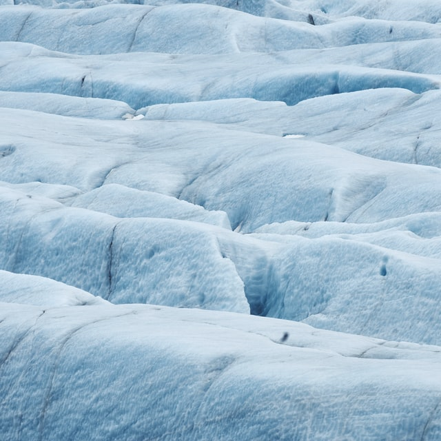
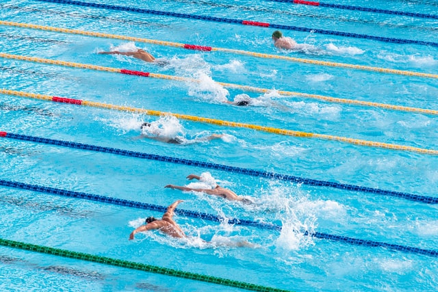
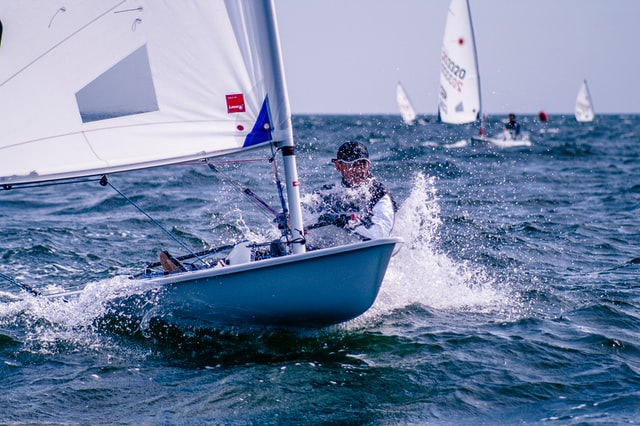
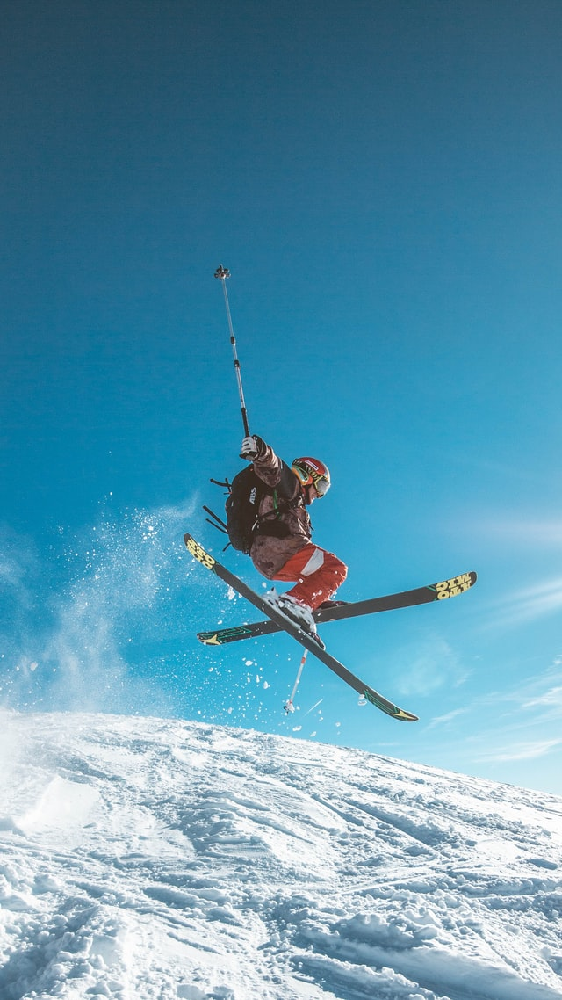
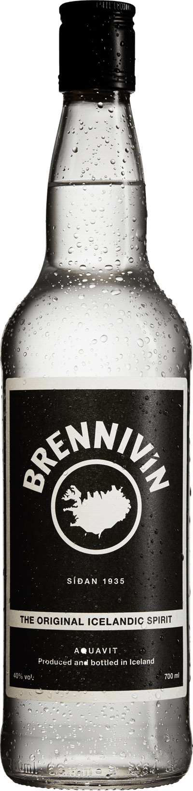
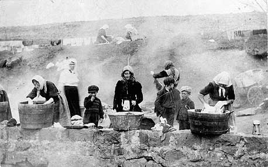

The Water of Iceland
By: Simon, Haukur, Rein, Embla, and Sveinn
water
For the Fish
The fish is important to the Icelandic economy “[the] Atlantic cod
(Gadus morhua) is the most iconic fish species for Iceland. A large,
fast growing, tasty fish, the cod plays a major role in the Icelandic
marine
ecosystem”(‘https://www.government.is/topics/business-and-industry/fisheries-in-iceland/the-main-species/’)
and economy, “The Fishing industry is one of the key industries in
Iceland, and directly employs around 9000 people, or approx. 5.3% of the
total workforce. The seafood industry contributed 11% to the GDP
directly, and 25% if account is taken of the indirect effects of the
ocean cluster. In 2012 the export production of marine products amounted
to ISK 269 billion (€ 1.7 billion), a 6.8% increase from previous year
and by 11.4% in quantity, a total of 749 thousand
tonnes.”(https://www.iceland.is/files/icelandic-fisheries-press-kit-enska-30-sept-2013.pdf)
Geothermal Water
Currently approximately. 90% of the housing in Iceland is heated with
direct geothermal. 9% is heated with electricity and just under 1% with
oil – mostly in the most rural areas and small island communities. The
main changes in fuel use for heating in the last 10 years is the slight
increase in the share of geothermal and a decrease in the share of oil.
As can be seen from the data almost all space heating is by renewable
energy resources, mainly geothermal. Please note that the electricity
grid for Iceland in 2017 was 73% hydro, 27% geothermal, 0,01% fuel and
0,04% wind. Source: National Energy
water inside
The Glaciers
“Vatnajökull ice cap is about 7700 km2 (and covers about 8% of Iceland)
and is still Europe’s largest ice cap by
volume”(https://www.vatnajokulsthjodgardur.is/en/areas/melting-glaciers/vatnajokull-ice-cap)
They shaped the land during the ice age, by deposition the rocks and
debris. (https://www.nps.gov/articles/
howglacierchangethelandscape.htm#:~: text=Glacial%20Deposition&
text=Glacier%20can%20also%20shape%20lands
capes,it%20flows%20over%20sediment%20beds.)

water in
Sports
swimming
Iceland is a country with a great bathing culture and where you
find a lot of swimming pools and natural hot springs. “Icelanders
like to go join friends in pools rather than at pubs or parks”
said filmmaker Jón Karl Helgason. Public bathing has records in
Iceland dating to the 13th Century. Snorralaug (Snorri’s Pool) is
a small circular pool that is used by an important literary figure
in Iceland, the saga writer Snorri Sturluson. However it was in
the 20th Century that pools became a fixture in everyday life.
Snorri’s Pool is evidence that Icelanders have used geothermal
pools as far back as the 13th Century. The Blue Lagoon is also a
huge thing in Iceland and it was created in 1976 and next to the
geothermal power plant. The lagoon was created by the excess water
from the power plant and the runoff goes into the Blue Lagoon,
which is what heats the water.

sailing
Iceland is probably not best known for its sailing but the
Westfjords is perfect for sailing in the fjords and bays and
enjoying Icelandic nature from the sea. Hrafna-Flóki Vilgerðarson
was the first Norseman to intentionally sail to Iceland. The
glacial lagoon is at the southern edge of the Vatnajökull glacier.
You sail among the huge icebergs, taste the 1,000-year old ice and
if you are lucky, you may even see some seals bobbing in the
lagoon. Whale watching while sailing is a big tourism attraction
in Iceland and a great pastime.

Skiing
Iceland only has a handful of ski resorts limited to operating
from November to May but the skiing and snowboarding culture in
Iceland is very much alive and growing. There are a lot of options
for skiing in Iceland like ski mountaineering , backcountry
skiing, Telemark skiing and cross-country skiing. The sport has
been popular with Icelanders since the 1950s, but hasn’t been an
important part of tourism until recently. A few organizations have
hosted events and competitions (IWG (Iceland Winter Games) , ISA
(Icelandic Ski Association), and Blizzard-Ski) so that has played
a big part in how Iceland's skiing reputation is growing.

water in
The Rivers
Jökulsá á Fjöllum is the second-longest river in Iceland. It’s 206km
(128 miles) long and flows from the center of Iceland to the north.
Hvítá is short at only 40km (25 miles) long, but it’s famous for two
reasons. It’s popular for rafting and fishing and it's the river that
feeds Gullfoss, the most famous waterfall in Iceland.
Some of the main characters of the Icelandic sagas go on a voyage, but
it was called going on a voyage when people sailed on robbery trips to
other countries. Sources from other countries show that the Vikings
sparked fear because they were violent, burned towns, killed people and
robbed both people and money.
There are 2 types of Viking ships that were built in the viking era.
There were Merchant ships that were designed for moving cargo on rivers
and coastal regions. The famous warships were much sleeker and easier to
manover. Most of them are depicted to have dragon heads and other scary
things on the stern and prow. The ships were made by using the Clinker
technique, which is where planks of wood would overlap with eachother
and would be tightly secured with iron. Something else about these ships
is that they have a very interesting burial system. They would be used
as coffins for important people like kings and queens. That's why a
bunch of preserved ships were found this way.

water in
The Food
Kjötsúpa, a traditional icelandic soup, has been around since the
settlement of iceland (around year 900). When the Norse settlers brought
sheeps with them, it started to become vital to survival.
(https://www.196flavors.com/iceland-kjotsupa/) Dulse, in Icelandic Söl,
has been eaten with butter, in soups, maybe mixed with barley for bread
making or traded it for meat, fish and other food throughout centuries
in iceland. These days, it is used to enhance soup and sauces or it can
also be eaten as a snack, topping for salads, fish dishes, and maybe
also toasted until crispy to use in pizza, popcorn or sandwiches.
water in
The Drinks
Brennivín is considered to be Iceland’s signature distilled beverage. It
is distilled from fermented grain mash and then combined with Iceland's
very soft, high-pH water, and flavored only with caraway. A clear,
savory, herbal spirit, the taste is often described as having notes of
fresh rye bread. It is considered to be a type of and bottled aquavit at
40% ABV (80 proof). The steeping of herbs in alcohol to create schnapps
is a long-held folk tradition in Nordic countries, and Brennivín is
still the traditional drink for the mid-winter feast of Þorrablót.
Today, Icelanders typically drink it chilled, as a shot, with a beer, or
as a base for cocktails. It often takes the place of gin in classic
cocktails, or of a lighter rum in tropical drinks.

water
For Cleaning
Þvottalaugarnar in Laugardal were hot waters frequently visited by house
mothers and working women. Women would visit and wash clothes, and on
the way back they would carry the clothes over their backs. They would
visit all year long, even during the cold and dark winter nights, they
would still visit and clean their clothes.
Many did not have hot water at home so they resorted to using the river,
but by 1960 there was running hot water and the rivers ended up drying
up.
Many people in Iceland would bathe in lagoons. Lagoons had hot water and
people would often just sit there and relax. This spans back centuries
of Snorri Sturluson building his own thermal pool for washing, and soon
after many people had also built their own for washing. Lagoons, while
mostly used for washing, were also used to combat the harsh weather.
Soaking in a nice, hot bath during the harsh and cold winters was
something many did. Small shacks were also built near lagoons for
washing up and general hygiene. In a search for gold in the early 20th
century, hot water was found instead. Pools were built as the water was
hot and unlimited, and was used for both washing clothes and bathing.
Nowadays, you cannot bathe in this type of water as it is extremely hot,
but you can visit the Blue Lagoon if you want to experience something
similar to Snorri’s baths.
